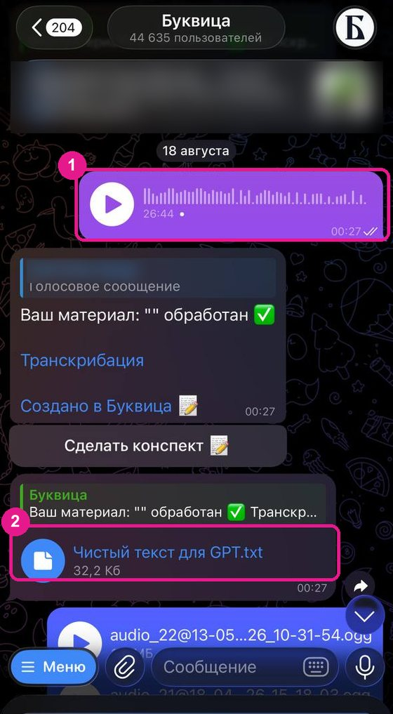
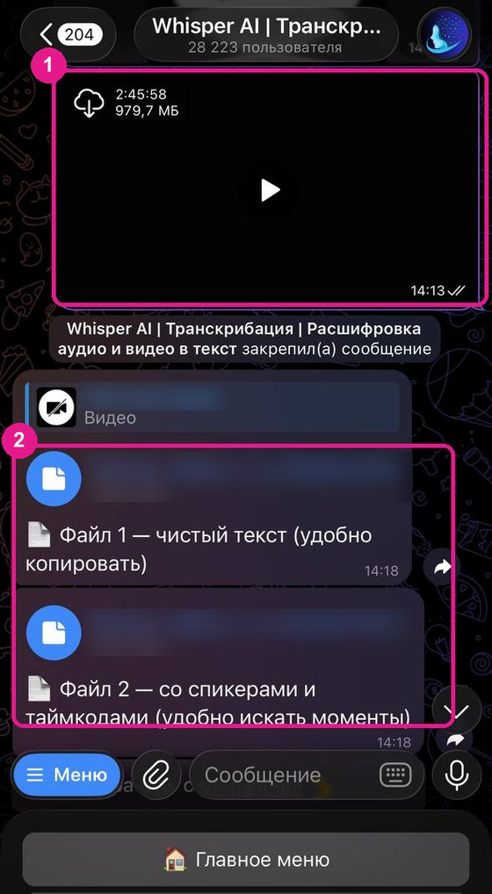

Зачем переводить голос в текст
Голос для навыка. Для навыка «Мой голос» из урока 2 нужна ваша живая речь: голосовые, эфиры, подкасты. Нейросеть разбирает её по тексту – ритм, любимые обороты, то, как вы объясняете сложное. В письменных текстах этого часто меньше, чем в речи.
Лекции, вебинары, подкасты – в конспект. Нейросеть работает с текстом. Сначала превращаем запись в буквы, потом – в конспект под вашу задачу.
Созвоны с клиентами. Расшифровка помогает не потерять договорённости и детали. Но только с согласия собеседника и с осторожностью к персональным данным – об этом чуть ниже.
Сначала о бережности
Чужой голос – чужие данные
Всё, что вы отправляете в бот или нейросеть, уходит на чужой сервер. Свои голосовые и открытые лекции – пожалуйста. А с разговорами, где есть другие люди, действует простое правило.
- Записывайте и расшифровывайте разговор с клиентом только с его согласия. Спросите заранее, ещё до начала записи.
- Перед тем как отдавать расшифровку нейросети, уберите персональные данные: имена, телефоны, адреса, диагнозы, суммы, названия компаний – всё, по чему можно узнать человека.
- Сомневаетесь насчёт куска – не берите его. Для навыка и конспекта он почти наверняка не критичен.
Расшифровываем
Четыре способа – от простого к сложному
Начните с первого: его хватает для голосовых и большинства записей. Остальные пригодятся, когда бесплатные расшифровки закончились, запись уже лежит на YouTube или встреча прошла в сервисе, который умеет расшифровывать сам. Интерфейсы сервисов меняются, поэтому ориентируйтесь на суть, а не на точные названия кнопок.
Бот «Буквица» в Телеграме
Тот самый бот из урока 2. Ничего устанавливать не нужно: отправляете запись – через пару минут получаете текст. Есть несколько бесплатных расшифровок, карту привязывать не нужно.
- Откройте бота по ссылке ниже и нажмите кнопку запуска внизу экрана. Это нужно сделать один раз – дальше бот просто будет в списке чатов.
- Отправьте запись. Подойдёт голосовое – своё или пересланное, аудио- или видеофайл через значок скрепки, а также ссылка на открытое видео на YouTube, VK или RuTube.
- Подождите пару минут. Длинную расшифровку бот пришлёт отдельным текстовым файлом.
- Сохраните файл к себе на компьютер. Расшифровки для навыка удобно держать рядом с другими материалами помощников – в папке «Мои помощники».
Запись лежит на компьютере, а Телеграм – на телефоне? Откройте web.telegram.org в браузере на компьютере и отправьте файл оттуда.

Загрузить запись прямо в нейросеть
ChatGPT, Gemini и некоторые другие нейросети на части тарифов принимают аудио- и видеофайлы: прикрепите файл через значок скрепки и попросите расшифровать. Что именно примет ваша нейросеть, зависит от тарифа, версии и даже от того, сидите вы в приложении или в браузере, – проще всего попробовать.
Если нейросеть отвечает, что не может слушать аудио, или файл слишком большой – переходите к способу 1 или 4. И следите, чтобы вместо расшифровки вам не выдали пересказ: для навыка голоса нужны ваши точные слова.
Попросить дословную расшифровку
Расшифруй этот файл дословно, слово в слово. Не сокращай, не пересказывай и не исправляй речь. Если какое-то место неразборчиво, поставь пометку (неразборчиво) и иди дальше. Если запись слишком длинная для тебя, скажи, на какие части её разделить.
Готовая расшифровка: YouTube, сервисы созвонов, подкасты
Иногда расшифровка уже существует – её нужно только найти.
- YouTube. У многих роликов есть автоматическая расшифровка. Ищите её под видео – в описании или в меню с тремя точками. Текст можно выделить и скопировать, тайм-коды не мешают.
- Zoom, Телемост и другие сервисы созвонов. На части тарифов они сами записывают встречу и делают расшифровку или краткий итог. Загляните в настройки записи до встречи – возможно, бот потом и не понадобится.
- Подкасты. У многих выпусков расшифровка лежит на странице выпуска. Проверьте сначала её, а если её нет – скачайте аудио и отправьте в бота.
Автоматические субтитры часто путают имена и термины. Как это поправить – в разделе «Частые проблемы».
Боты на технологии Whisper
Whisper – технология распознавания речи, на ней работают многие боты и сервисы расшифровки. Пригодится, когда в «Буквице» закончились бесплатные расшифровки или запись длинная и с несколькими собеседниками: лимиты у разных ботов считаются отдельно.
Работает так же: отправляете запись – получаете текст. Например, бот ниже присылает сразу два файла: чистый текст и версию с тайм-кодами и разделением по говорящим.
Выбирая другой бот такого типа, помните про бережность: не отправляйте в незнакомые сервисы разговоры, где есть чужие персональные данные.

Шпаргалка
Что выбрать под вашу запись
Свои голосовые для навыка «Мой голос»
«Буквица» – пересылаете голосовые прямо из переписки.
Лекция или вебинар на YouTube
Сначала поищите готовую расшифровку под видео. Нет – отправьте ссылку в «Буквицу».
Созвон или консультация
Встроенная расшифровка сервиса созвонов, если она есть на вашем тарифе. Нет – запись в бота. И в обоих случаях – согласие собеседника.
Длинная запись с несколькими людьми
Бот, который делит текст по говорящим, или промпт «раздели по спикерам» ниже.
Короткий файл, а нейросеть принимает аудио
Загрузите прямо в чат и попросите дословную расшифровку.
После расшифровки
Что делать с текстом дальше
Сырая расшифровка – это ещё не результат. Дальше всё зависит от задачи: для навыка голоса текст нужно почистить очень бережно, для разговора нескольких людей – разделить по репликам, для лекции – превратить в конспект.
Почистить, но не причёсывать
Для навыка «Мой голос» важно сохранить вашу речь как есть: все «ну», «короче», повторы и обрывы фраз – это ваш ритм, именно его нейросеть и должна увидеть. Чистим только ошибки распознавания и служебный мусор. Если правок почти нет, можно вообще ничего не чистить и отдать расшифровку как есть.
Промпт 1 · почистить расшифровку, не меняя моих слов
Ниже расшифровка моей живой речи. Она нужна как образец того, как я говорю, поэтому почисти её очень бережно.
Что можно:
– исправить явные ошибки распознавания, когда по смыслу видно, что слово распознано неверно;
– убрать тайм-коды и служебные пометки сервиса;
– расставить знаки препинания и разбить текст на абзацы.
Чего нельзя:
– менять мои слова на синонимы и «улучшать» формулировки;
– убирать мои словечки, повторы, «ну», «короче», обрывы фраз – это мой ритм;
– сокращать, пересказывать и добавлять что-то от себя.
Если не уверен, какое слово там было, не угадывай: поставь знак (?) и выпиши такие места отдельным списком в конце.
Расшифровка:
"""
[вставьте расшифровку или прикрепите файл]
"""Разделить по спикерам
Бесплатные расшифровки часто сливают всех говорящих в один поток. Нейросеть может разделить реплики по смыслу. Для навыка голоса это ещё и способ оставить только ваши слова – чужие реплики навыку не нужны.
Промпт 2 · раздели по спикерам
Это расшифровка разговора: [что это – консультация, эфир с гостем, созвон команды]. Участники: [кто говорит – например: я, ведущая; гость, эксперт по питанию]. Раздели текст на реплики и подпиши перед каждой, кто говорит. Определяй по смыслу, по обращениям и по тому, кто задаёт вопросы. Сами слова не меняй и не сокращай. Если не уверен, чья это реплика, поставь знак (?). В конце отдельным блоком собери только мои реплики одним текстом, подряд, без чужих. Расшифровка: """ [вставьте расшифровку или прикрепите файл] """
Сделать конспект
Для лекции, вебинара или подкаста. Короткая версия – ниже, а четыре формата конспекта под разные цели – в бонусе «Конспект из чего угодно».
Промпт 3 · сделай конспект
Сделай конспект этого материала под мою задачу. Пересказ мне не нужен. Моя задача сейчас: [над чем работаете и зачем вам этот материал] Материал: """ [вставьте расшифровку или прикрепите файл] """ Оставь только то, что относится к моей задаче: 1. Главные мысли – по пунктам, короткими фразами. 2. Конкретика: приёмы, шаги, формулировки, которые можно взять и использовать. 3. Что противоречит тому, как я делаю сейчас, – отдельным списком. Не добавляй ничего, чего нет в материале. Если что-то спорно или не подтверждено, так и пометь.
Если что-то пошло не так
Частые проблемы
Имена и термины искажены
Распознавание речи плохо знает фамилии, названия методик и профессиональные слова: вместо них появляются похожие по звучанию. Не правьте руками по всему тексту – дайте нейросети список правильных написаний.
Промпт 4 · исправить имена и термины по списку
В этой расшифровке искажены имена и термины. Вот как они пишутся правильно: [список: имена и фамилии, названия методик, программ, профессиональные термины – по одному на строку] Исправь по всему тексту только эти слова и их искажённые варианты. Остальной текст не трогай. Если встретишь другие похожие искажения, которых нет в списке, не исправляй их сам, а выпиши отдельно в конце – я проверю. Расшифровка: """ [вставьте расшифровку или прикрепите файл] """
Длинный файл
Боты и нейросети ограничены по размеру и длительности файла. Разделите запись на части по 20–30 минут – это умеет любой бесплатный аудиоредактор, а на телефоне часто и стандартный диктофон. Длинную расшифровку тоже лучше отдавать нейросети частями: если вставить несколько часов текста одним куском, она начнёт читать по диагонали и упустит середину.
Промпт 5 · отдать длинный текст частями
Я пришлю длинную расшифровку частями. Это часть 1 из [сколько всего частей]. Просто прими её и жди следующую, ничего пока не делай. Задание дам после последней части.- Кончились бесплатные расшифровки. Возьмите другой бот – лимиты у них считаются отдельно.
- Бот не принимает ссылку. Проверьте, что видео открытое, а не приватное. Не помогло – скачайте ролик и отправьте файлом.
- В расшифровке каша из говорящих. Это нормально для бесплатных расшифровок. Помогут промпт 2 или бот, который сам делит текст по говорящим.
- Много ошибок по всему тексту. Чаще всего виноват звук: шум, музыка, далёкий микрофон. Для своих голосовых записывайте в тишине и держите телефон ближе.
Попробуйте прямо сейчас
Возьмите одно своё голосовое на 3–5 минут, где вы рассказываете о работе или о том, что вас волнует. Отправьте его в «Буквицу», почистите промптом 1 и добавьте к материалам для навыка «Мой голос».
Перечитайте расшифровку: узнаёте в ней себя? Именно эти обороты нейросеть и возьмёт в ваш голос.